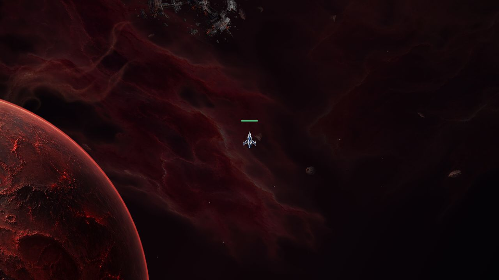
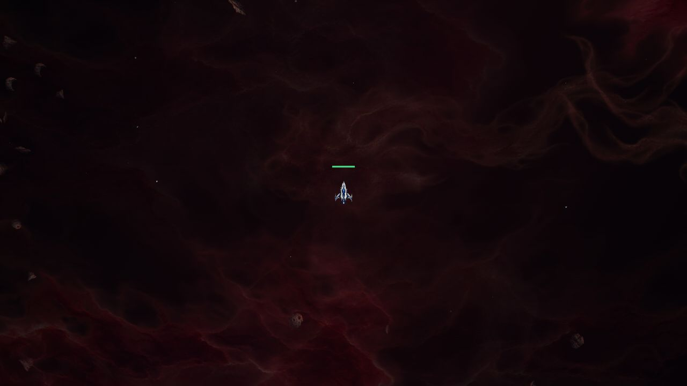
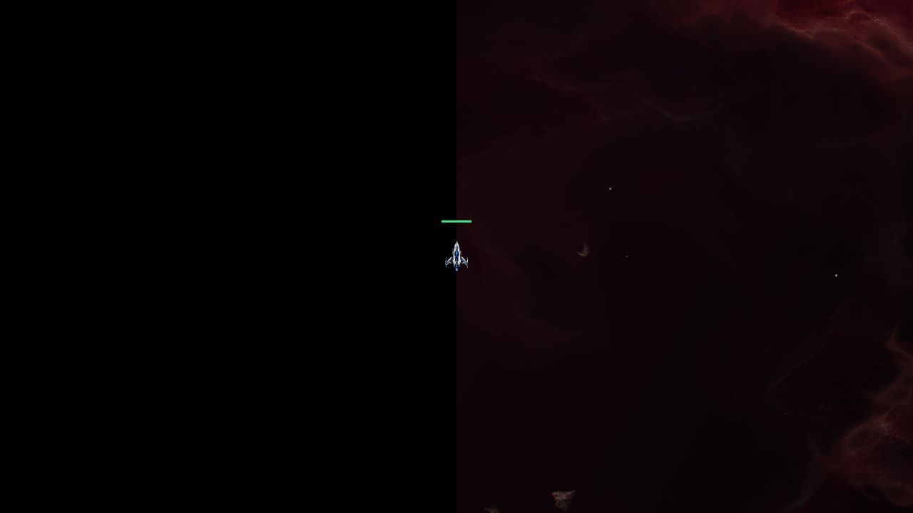

Helion-01 : profondeur et parallaxe
Vidéo de 14 secondes dans l'aperçu utilisant le moteur de décor du jeu. Le parcours montre un déplacement puis le retour, avec des plans qui défilent à des vitesses différentes. Ce n'est pas une capture d'une partie multijoueur connectée.
Ouvrir directement la vidéo MP4
Près de la planète : voiles de poussière devant le globe et plans plus lointains derrière.
Au centre du secteur : nuages et rochers à plusieurs profondeurs.
Au bord du secteur : le décor s'arrête, le hors-map reste noir, sans contour tracé.